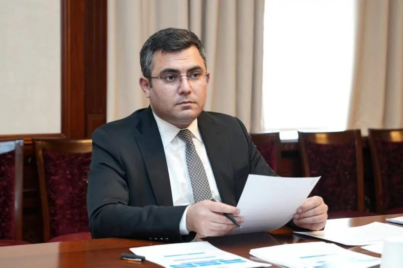

Rəsmi XronikaSəlahiyyətli Nümayəndə Ceyhun Cəlilovun rəhbərliyi ilə icra intizamı və regional layihələr üzrə müşavirə keçirilib
Nümayəndəlikdə keçirilən toplantıda dövlət orqanlarının qarşılıqlı fəaliyyəti, vətəndaş müraciətlərinin cavablandırılması və investisiya layihələrinin gedişi müzakirə edilib.